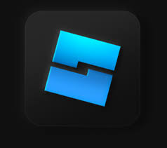

About Me
Hello! I'm Brett Rosenberg, a passionate Computer Science major at the University of Central Florida, currently in my third year. I am deeply interested in software development, machine learning, and game design. Since beginning my journey at UCF in 2022, I've been fortunate to have enriching experiences that have shaped both my academic and professional trajectory. My favorite class so far has been Computer Science 1, where I had the privilege of learning from Professor Arup Guha, whose guidance was instrumental in helping me prepare for my foundation exam. This course built upon my initial exposure to C Programming and ignited my passion for coding.
Beyond academics, I'm actively involved in various campus organizations like HACK@UCF, the Tennis Club, and the EXCEL and COMPASS programs. I also contribute as a mentor in the EXCEL program, helping undecided freshmen explore STEM majors, and as a Teaching Assistant for the Concepts in Computer Science course, where I assist over 700 students in mastering Python and foundational computer science concepts.
Professionally, I have experience working with Roblox Studio to create engaging adventure games, where I employ Lua scripting to build complex gameplay mechanics and optimize user engagement, reaching over 185,000 unique visitors. During my internship at Pediatrix, I collaborated on cross-functional teams to apply Test-Driven Development (TDD) practices in Python, handle data management with SQL and Linux scripts, and containerize applications using Docker in a DevOps environment.

Currently, I am involved in research with the UCF CS Department, focusing on designing and implementing machine learning models that leverage large datasets to drive insights and support healthcare decision-making. My goal is to continue combining my love for coding, machine learning, and game design to develop innovative solutions that have a meaningful impact.
When I’m not coding or mentoring, you can find me cheering for my favorite NBA team, hanging out with friends, or spending time with my cat. I firmly believe that the key to thriving in college is to stay curious, ask questions, and, most importantly, avoid the dining hall food!
Career Objective
As a dedicated and ambitious Computer Science student at the University of Central Florida, I am driven by a strong passion for artificial intelligence, software engineering, and the innovative potential they hold. My career objective is to leverage my skills in programming, machine learning, and software development to build intelligent, scalable, and impactful solutions. With hands-on experience in creating machine learning models, developing dynamic software applications, and designing interactive games, I am eager to contribute to cutting-edge projects that push the boundaries of technology. I am particularly interested in roles that allow me to collaborate with forward-thinking teams to solve complex problems, innovate in AI and software engineering, and continuously learn and grow as a technologist. I aim to apply my analytical skills, technical expertise, and creativity to contribute to advancements in AI-driven applications and transformative software solutions that enhance user experiences and drive meaningful outcomes.
Education
University of Central Florida - Bachelor of Science in Computer Science
Expected Graduation: May 2026 | GPA: 3.8, Dean’s List
- Campus Involvement: HACK@UCF, Tennis Club, EXCEL, COMPASS, Internship panel speaker
- Relevant Coursework: Systems Software, Object-Oriented Programming, Computer Science 2, Calculus 2, Physics, Discrete
Marjory Stoneman Douglas High School - High School Diploma
Aug 2018 - Jun 2022
- Activities and societies: Varsity tennis for three years, National Honor Society, DECA
- Skills: Computer Literacy, QuickBooks, and Microsoft Office
Relevant Experience
PEDIATRIX | Intern
May 2023 – August 2023
- Collaborated within a cross-functional team of 5 engineers, following the adoption of Test-Driven Development (TDD) in Python projects using Visual Studio Code, which resulted in reduction in post-deployment bugs and streamlined version control using GitHub.
- Analyzed and corrected a database of over 10,000 outdated emails using SQL queries and Linux scripts, improving communication accuracy and reducing bounce rates.
- Acquired hands-on experience with Docker for containerizing applications in a DevOps context.
- Managed and resolved over 50 technical support tickets using ServiceNow, focusing on troubleshooting software issues and providing end-user training.
Roblox Games | Designer/Scripter
December 2022 – Present
- Architect and deploy complex adventure games on Roblox using Lua in Roblox Studio, integrating advanced algorithms for dynamic quests, multi-level challenges, in-game monetization, player animations, and GUIs.
- Collaborated with a co-designer on game design and strategy, optimizing user engagement through iterative testing and feedback, resulting in increased player retention rates.
- Engineered successful marketing strategies that drive over 340,000 unique visitors and maintain an active user base of 2,000+ through analytics, community building, and targeted user acquisition campaigns.
- Explore more of my Roblox games at Blastin' Off Games.
Marketing Manager
CMO FUNDING · Part-time | Jun 2022 - Aug 2022 · 3 mos | CORAL SPRINGS · On-site
- Assisted with addressing the organization’s information technology needs, focusing on creating and maintaining the company website, ensuring it met organizational and user needs.
- Facilitated smooth and efficient client interactions by effectively communicating with them to schedule appointments and respond to inquiries, enhancing customer service and satisfaction.
- Skills: Website Building, Independence, Digital Marketing, Marketing, B2B Marketing, English, Information Technology
Intern
Castle Group · Full-time | Jun 2021 - Aug 2021 · 3 mos | Florida, United States · On-site
- Processed ownership information into accounting software, assigned fees into new residents' accounts.
- Skills: QuickBooks, Computer, Community Outreach, Customer Service, Microsoft Office, Customer Satisfaction, Communication, Property Law, Finance, Computer Literacy
File Manager
Coconut Creek Automall · Full-time | Jun 2020 - Aug 2020 · 3 mos | Florida, United States · On-site
- Organized the back-office paperwork, purged old information from previous customer files, demonstrated ability to work under little to no supervision.
- Skills: File Management, Independence, Communication, Leadership, Time Management
Front Desk Attendant
Broward Health · Part-time | Dec 2019 - Mar 2020 · 4 mos | Coral Springs, Florida, United States · On-site
- Offered customer service support to patients and visitors, delivered flowers and gifts for patients, answered phone calls.
- Skills: Customer Service, Independence, Phone Etiquette, Microsoft Office, Communication, Leadership, Computer Literacy
Volunteer
HCA Florida Westside Hospital · Part-time | Jun 2018 - Sep 2018 · 4 mos | Plantation, Florida, United States · On-site
- Offered customer service to patients and visitors. Checked in visitors and patients, unloaded boxes, and dedicated time in the OR unit.
- Skills: Volunteering, Security, Team Management, Team Building, Checking in
Disney Park Reservation System
This project is a Disney Park Reservation System that allows users to make and manage event reservations. It includes a Node.js backend with Express and MongoDB for data persistence, and a React.js frontend for the user interface.
Features:
- Create Reservations: Users can create reservations for specific events.
- View Reservations: List and view all the reservations in the system.
- Responsive Frontend: Built with React.js to offer a dynamic user experience.
- Data Persistence: MongoDB is used for database management.
Technologies Used:
- Node.js
- Express.js
- MongoDB
- React.js
- Mongoose
How to Run Locally:
- Clone the repository:
git clone https://github.com/brettr7388/disney-park-reservation.git
- Install dependencies for both the backend and frontend:
cd backend && npm install
cd frontend && npm install
- Ensure MongoDB is running locally or connect to a cloud instance, and update the connection string in the `.env` file.
- Start the backend and frontend servers:
cd backend && npm start
cd frontend && npm start
Key Accomplishments:
- Implemented asynchronous data handling in the frontend for efficient user interaction.
- Designed scalable architecture to allow future expansion such as user authentication and event filtering.
- Handled cross-origin requests (CORS) efficiently to ensure smooth frontend-backend communication.
Challenges Faced:
- Optimizing concurrent requests handling in MongoDB to avoid race conditions in reservation creation.
- Setting up cross-origin resource sharing (CORS) correctly between the frontend and backend servers.
Future Enhancements:
- Adding user authentication and authorization for personalized reservations.
- Event search and filtering capabilities to improve the user experience.
- Integration with third-party APIs for real-time event management and availability.
Blastin' Off Games
Welcome to "Blastin' Off Games," a Roblox game development group that I created to bring exciting and engaging experiences to players worldwide. Here you can explore some of the top games developed under this group, each categorized by its unique gameplay and features.
Game 1: Wednesday RP - Nevermore Academy Obby
- Description: This is an action parkour game where you play as a student of Nevermore Academy. As a student you must complete over 20+ levels to save Wednesday. The idea for this game came from the popular Netflix series, Wednesday.
- Genre: Adventure, RPG, Parkour, etc.
- Players: 79,000+
- Link: Play Now
Game 2: [NEW] Matilda Obby Parkour
- Description: This is an action parkour game where you are a student of Matilda's school and you must escape the evil Ms. Trunchbull. This obstacle game has over 50+ levels each level with respawn points, interactable NPC's and items to claim and purchase. The idea for this game came from the Netflix remake of the movie, Matila.
- Genre: Action, Puzzle, Parkour, etc.
- Players: 61,000+
- Link: Play Now
Game 3: The Little Mermaid Obby Parkour
- Description: A brief description of the game and its main features.
- Genre: Simulation, Strategy, etc.
- Players: Maximum number of players supported.
- Link: Play Now
Game 4: Roblox Event: The Classic Obby
- Description: A brief description of the game and its main features.
- Genre: Horror, Mystery, etc.
- Players: Maximum number of players supported.
- Link: Play Now